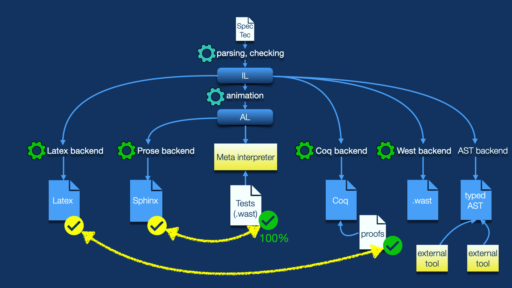

Published on March 27, 2025 by Andreas Rossberg.
Two weeks ago, the Wasm Community Group voted to adopt SpecTec for authoring future editions of the Wasm spec. In this post, I’ll shed some light on what SpecTec is, what it helps with, and why it takes Wasm to a new level of rigor and assurance that is unprecedented when it comes to language standards.
One feature that sets Wasm apart from other mainstream programming technologies is that it comes with a complete formalization: its syntax (binary and text format), type system (validation), and operational semantics (execution) are given in self-contained, mathematically precise terms. This formal specification was not an afterthought, it is an integral part of Wasm’s design process and has been a normative part of the official language standard from day one. And not just that: it enabled the soundness of the language — i.e., the fact that it has no undefined behavior and no runtime type errors can occur — to be machine-verified before the first version of the standard was published.
This was a huge leap forward, because the practical state of language specifications is basically stuck in the 1960s: most language standards, even new ones, are still defined by some basic grammar notation for their syntax (and sometimes not even that), while their semantics is given by a combination of pretty prose, hidden assumptions, and wishful thinking.
It is hard to avoid ambiguities, contradictions, oversights, and serious bugs in such an approach. Given that programming languages are the very foundation upon which all our critical systems are built today, that is a bit scary. And not quite up to the standard that we came to expect from other mature engineering disciplines: imagine a suspension bridge built with the methodology of a tree house, from just pencil drawings and with statics guesstimated as we go.
Fortunately, that gap is more or less a solved problem, at least in principle. When it comes to scientific papers and text books, programming languages are routinely defined by a combination of formal techniques developed in the 70s to 90s. In 1990 already, The Definition of Standard ML was published, the first comprehensive formal definition of a general-purpose programming language of realistic size and scope. (In case you have never heard of it, ML was a precursor to contemporary functional languages like OCaml and Haskell, a highly influential academic language that pioneered features like type inference, type polymorphism (generics), variant types, pattern matching, and advanced module systems in the early 80s.)
Formalization obviously is tremendously useful for verification and safety, but it also informs the design process of a language. When you have to carefully spell out every semantic detail, then “hacky” features tend to materialize quickly in terms of accidental complexity: a construct that requires ad-hoc rules, many special cases, or duplication often indicates a design problem. The feedback loop between design and formalization (and sometimes proofs) hence helps to produce a simpler and cleaner language, analogous to how implementation feedback helps with other metrics like performance. In a way, it keeps us honest as designers.
With Wasm, we set out to give the state of the art of mainstream language specification a bit of a push and demonstrate that modern methodologies are ready for prime time. That is why — in addition to a conventional prose specification — the Wasm spec also contains a complete (and normative!) formal specification. In fact, the formal version was written long before the prose, which was then created by manually transliterating the formal rules into natural language (for some definition of “natural”). Both formulations complement each other: where the mathematical formulation is declarative and amenable to formal methods and quick iteration, the prose formulation is algorithmic and more accessible to a broader audience of readers.
However, with that we also created a new problem for ourselves: We now have doubled the work that spec and proposal authors have to do. They have to write both formulations by hand, a process that is laborious, tedious, and error-prone. Likewise, the spec editor has to review both, which is equally tedious and error-prone, especially since neither reStructuredText (Sphinx) nor LaTeX, — the formats in which the Wasm spec document is written — where designed with readability or effective diffs in mind. We had to hack around the shortcomings of both with shell scripts and fragile Sphinx plug-ins, in an attempt to address some of their more serious problems, like the lack of macros or layout-sensitive markup rules.
And then there are projects like WasmCert, which maintain Wasm’s mechanized soundness proof and other formal methods developments. They need to translate this semantics into a form readily understood by a proof assistant. Yet again, this requires a tedious manual translation to yet another formulation, which, while closely mirroring the formal rules structurally, is very different syntactically. It has been a challenge for WasmCert to keep up with the pace of Wasm’s evolution, and both its mechanizations still only cover (most of) Wasm 2.0, although many new proposals have already been merged in the meantime.
We knew that we would eventually get this problem. However, when we first wrote the Wasm spec back in 2017, there was no better way: we neither had the technology, nor the resources, nor could we predict future requirements well enough.
Fast-forward to early 2023, and the stars aligned. At a scientific retreat revolving around Wasm, we sat together between several groups of researchers and discussed the prospect of automating parts of the spec-writing and verification process. The idea quickly grew into designing a domain-specific language (DSL), in which the syntax and semantics of Wasm can be specified faithfully, and then generating all the mentioned artifacts from that single source of truth. Lacking better ideas, we called the DSL “SpecTec”.
SpecTec allows expressing the formal rules of Wasm, almost as they occur in the spec, but in plain, readable ASCII. This source is then read by the SpecTec implementation, run through a few phases of parsing, meta-level type checking, and translation, and in the end it can spit out various outputs:
Viewed from above, SpecTec’s implementation is a compilation pipeline with multiple internal representations and various backends. The picture below shows a high-level view of it.

Generating (algorithmic) natural language prose from a (declarative) mathematical specification is novel ground. But here are several more goodies hidden in this diagram.
For one, the prose to be generated is internally represented by an AST called the “algorithmic language” (AL). And because that is algorithmic, we can actually execute it. That is what the meta interpreter does: it takes the description of Wasm’s execution semantics expressed in SpecTec and can “run” that, e.g., on an actual Wasm module. That way, we can feed the Wasm test suite to it, and indeed, all applicable tests pass!
This gives a whole new level of assurance (indicated by the yellow chalk arrows in the picture), that the prose specification that you’ll read in the rendered document actually is correct and defines what we think it defines! That was not the case before, and indeed, while developing SpecTec, we discovered numerous bugs in the hand-crafted prose, and there are probably many more we didn’t spot. With SpecTec, a wide range of brainless spec bugs becomes impossible, some by construction, some because we can run it against the test suite. (Caveat: The meta interpreter currently calls out to the Wasm reference interpreter for decoding and validation; hence this only tells us something about execution. In the future, we hope to make it more self-contained.)
In a similar vein, SpecTec can generate definitions representing the Wasm semantics in Coq/Rocq, the dominant proof assistant in the area of programming languages. We have started porting the proofs from the hand-written WasmCert mechanization, and can already handle soundness for the Wasm 1.0 subset. Scaling to the full language is work in progress.
Once we have proved full soundness this way, we also reach a new level of assurance regarding the formal specification that you see in the rendered specification document! This is because both rendered spec and mechanized definitions are now auto-generated from the same source of truth, and producing Coq no longer involves a manual translation that is merely based on “eyeball correspondence” with the original paper rules.
Finally, we have recently started work on another exciting backend for SpecTec:
this one can spit out .wast test files. So, it is essentially a test fuzzer.
However, it is a fuzzer that is guided by full knowledge of the syntax and
semantics of the language! It understands the typing rules and can predict the
result of executing a piece of code. For example, by just looking at the typing
rule of an instruction, it could systematically generate a complete
combinatorial matrix of micro tests for that instruction, that is, tests for its
behavior under all interesting combinations of types and operands.
Once more, this would take Wasm to a new level of assurance, this time for implementations. So far, it has been tedious manual work to write tests — or in some rare cases, manually written scripts that generate some very specific tests. The coverage of the Wasm test suite, despite not being bad overall, hence has been “variable” at best. In the future, we hope to get much better coverage with much less work. And because SpecTec is a generic tool, this ought to be applicable not just to present features, but also to features that Wasm grows in the future.
As a final remark, note that SpecTec is not AI. Instead, it is a meticulously designed translation process. That is very important: when accuracy and rigor is the goal, then AI with its blackbox behavior and tendency to hallucinate is not an adequate tool.
Now that the CG has voted to adopt SpecTec, we are working on tweaking a few remaining rendering issues, and once they are done, we will merge SpecTec — both the implementation of the tool as well as the actual Wasm spec written with it — into the main Wasm spec repo. At that point, SpecTec will be automatically invoked as part of the spec build process.
That is, nothing will change about the overall procedure for building the spec. Proposal authors, however, no longer need to write much prose or any LaTeX, but instead extend the SpecTec files and hit a button — well, in the ideal case anyway; in the beginning, we fully expect road bumps and some missing features in SpecTec.
All of Wasm 2.0 and all current Phase 4 and 5 proposals are already integrated into SpecTec. The official Wasm 3.0 spec will be produced with SpecTec. You can see a draft of that Wasm 3.0 spec already. For most part, it looks not too different from the hand-crafted document.
However, not all of the document has been converted to SpecTec yet — we intentionally designed the tool to allow incremental conversion. Notably, the sections on numeric primitives and on the text format are currently still written manually. We plan to convert these over after Wasm 3.0, but in due time.